Временные ряды
Вопросы по временным рядам.
-
Временной ряд - это последовательность наблюдений, упорядоченных по времени:
$$ y_1, y_2, \ldots, y_T, $$
где $y_t$ - значение величины в момент времени $t$. В ML чаще пишут не просто $y_i$, а именно $y_t$, потому что порядок наблюдений важен.
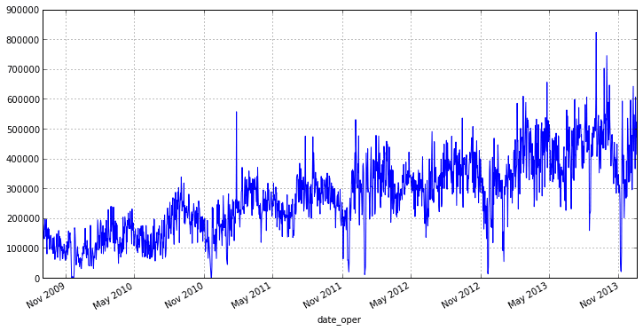
Пример настоящего ряда с дневным шагом: с ноября 2009 по конец 2013 года (ось x подписана date_oper, ось y без подписи). В нём видно сразу всё, о чём пойдёт речь дальше: восходящий тренд (уровень поднялся примерно со 150 тысяч до 400–500 тысяч), сильный шум от дня ко дню и отдельные выбросы — вниз почти до нуля и вверх до 820 тысяч. Именно из-за такой структуры наблюдения нельзя перемешивать: соседние дни похожи друг на друга, и порядок несёт информацию. В обычной табличной задаче объекты часто считают независимыми. Во временных рядах это почти никогда не так: значение сегодня зависит от вчерашнего, прошлой недели, сезона, праздников, промоакций, состояния оборудования и других временных факторов.
Главная особенность ряда - зависимость от прошлого. Поэтому нельзя случайно перемешивать наблюдения перед train/test split: это приводит к утечке будущего в обучение.
- продажи магазина по дням;
- температура воздуха по часам;
- CPU utilization сервера по минутам;
- цена акции по торговым дням;
- количество заявок в поддержку по неделям.
Горизонт прогноза - это насколько далеко вперёд мы предсказываем:
- one-step forecast: $\hat{y}_{t+1}$;
- multi-step forecast: $\hat{y}_{t+1}, \ldots, \hat{y}_{t+h}$.
Чем дальше горизонт, тем выше неопределённость и тем важнее учитывать сезонность, тренд и внешние признаки.
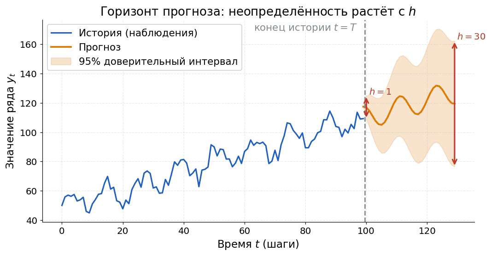
Синим — история из 100 наблюдений, оранжевым — прогноз на 30 шагов вперёд, светлая заливка — 95% доверительный интервал. Красные стрелки показывают его полную ширину на двух горизонтах: при $h=1$ это около 16 единиц по вертикальной шкале, то есть $\pm 8$ вокруг прогноза, а при $h=30$ — уже около 85, то есть $\pm 43$. Здесь интервал расширяется как $\sqrt{h}$, потому что ошибки отдельных шагов накапливаются. Практический вывод: прогноз на завтра и прогноз на месяц вперёд — задачи разной сложности, и оценивать их качество надо отдельно по каждому горизонту. Links
Что такое временной ряд?
Это последовательность наблюдений $y_1, \ldots, y_T$, упорядоченных по времени.
Почему временной ряд нельзя просто перемешать перед обучением?
Потому что порядок несёт информацию. Случайное перемешивание может дать модели доступ к будущему и завысить качество.
Что такое горизонт прогноза?
Количество будущих шагов, которые нужно предсказать: например, один день вперёд или 30 дней вперёд.
Чем временной ряд отличается от обычной табличной выборки?
Наблюдения во временном ряду обычно зависимы друг от друга, а в табличных задачах их часто приближённо считают независимыми.
-
Временной ряд часто раскладывают на несколько смысловых частей:
$$ y_t = T_t + S_t + R_t, $$
где $T_t$ - тренд, $S_t$ - сезонность, $R_t$ - остаток или шум.
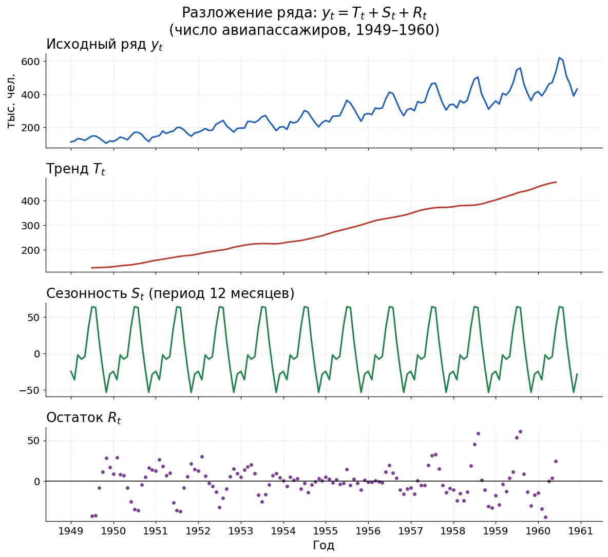
Классический ряд числа авиапассажиров (1949–1960, тысячи человек) разложен аддитивно с периодом 12 через statsmodels seasonal_decompose. Сверху вниз: исходный ряд, тренд (сглаженный скользящим средним, растёт примерно со 130 до 470), сезонность (один и тот же годовой профиль с летним пиком около $+65$ и провалом в ноябре около $-55$) и остаток. Отдельно посмотри на нижнюю панель: в середине ряда, около 1954–1956, остаток почти нулевой, а к краям разброс доходит до $\pm 60$. Это подсказка, что сезонность здесь скорее мультипликативная и аддитивное разложение ей не совсем подходит. Компонента Что означает Пример Тренд Долгосрочное направление изменения продажи растут год к году Сезонность Повторяемый паттерн с известным периодом пики заказов по выходным Цикл Длинные колебания без фиксированного периода экономические циклы Шум Нерегулярная часть, которую модель не объяснила случайные отклонения спроса Выбросы Резкие нетипичные значения авария, распродажа, сбой датчика Если амплитуда сезонности примерно постоянна, удобно использовать аддитивную модель:
$$ y_t = T_t + S_t + R_t. $$
Если сезонные колебания растут вместе с уровнем ряда, лучше думать в мультипликативной форме:
$$ y_t = T_t \cdot S_t \cdot R_t. $$
На практике мультипликативную структуру часто переводят в аддитивную через логарифмирование.
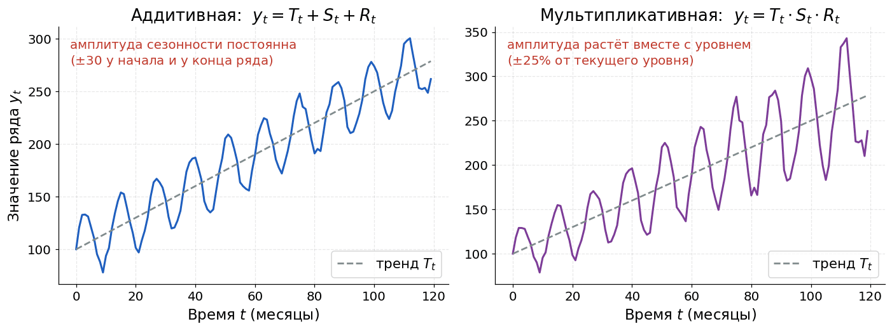
Слева синим — аддитивный ряд: сезонная волна даёт постоянные $\pm 30$ и в начале, и в конце. Справа фиолетовым — мультипликативный: та же волна составляет $\pm 25\%$ от текущего уровня, поэтому её размах растёт вместе с серым пунктирным трендом. Отсюда простое правило выбора: размах колебаний не зависит от уровня — берём аддитивную модель, растёт вместе с уровнем — мультипликативную или логарифм, который превращает вторую в первую. Обрати внимание, что вертикальные шкалы панелей разные: слева до 300, справа до 350. Если интернет-магазин каждый декабрь продаёт больше из-за праздников, это сезонность. Если при этом бизнес из года в год растёт, это тренд. Если в один день случился технический сбой и продажи резко упали, это выброс.
Links
Что такое тренд во временном ряду?
Долгосрочное направление изменения уровня ряда: рост, падение или медленное изменение среднего.
Что такое сезонность?
Повторяемый паттерн с более-менее фиксированным периодом: день, неделя, месяц, год.
Чем сезонность отличается от шума?
Сезонность повторяется и её можно моделировать, а шум - нерегулярная необъяснённая часть.
Когда мультипликативную модель полезно логарифмировать?
Когда амплитуда колебаний растёт вместе с уровнем ряда: после логарифма произведение превращается в сумму.
-
Как валидировать модели на временных рядах?
Во временных рядах train/test split делают по времени:
$$ \underbrace{1,\ldots,t}_{train} \quad \underbrace{t+1,\ldots,T}_{test}. $$
Модель обучается только на прошлом и проверяется на будущем. Это имитирует реальное применение модели.
Нельзя считать признаки с использованием будущих значений. Например, признак
rolling_mean_7для момента $t$ должен использовать только $y_{t-6}, \ldots, y_t$ или только прошлые значения, если предсказываем $y_t$ заранее. Если случайно включить $y_{t+1}$ или более поздние точки, метрика станет искусственно хорошей.Четыре фолда подряд, синий — train, оранжевый — validation. Expanding window: обучение растёт, валидация всегда правее. Sliding window: длина обучения фиксирована, окно едет вправо. Случайный $k$-fold: часть обучающих блоков стоит правее валидационных — модель учится на будущем, и метрика получается завышенной. Backtesting - это проверка модели на нескольких последовательных временных срезах. Например:
Fold Train Validation 1 $1..100$ $101..120$ 2 $1..120$ $121..140$ 3 $1..140$ $141..160$ Такой подход показывает, стабильно ли модель работает на разных участках истории.
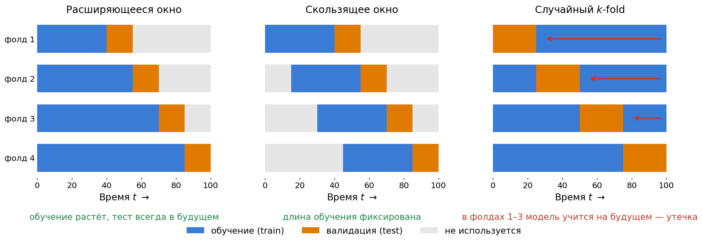
Три схемы разбиения одного ряда на 4 фолда: синий — обучение, оранжевый — валидация, серый — не используется, время идёт слева направо. Расширяющееся окно: обучающая часть растёт от фолда к фолду, валидация всегда правее неё. Скользящее окно: длина обучения фиксирована (40 точек), окно целиком едет вправо — так проверяют модель, которую регулярно переобучают на свежих данных. Случайный $k$-fold: в фолдах 1–3 синие блоки стоят правее оранжевого, и красные стрелки показывают, что модель учится на данных из будущего относительно теста. Это и есть утечка: метрика получится завышенной, а в проде модель так работать не сможет. Для временных рядов часто используют обычные регрессионные метрики: MAE, RMSE, MAPE, sMAPE. Но важно смотреть не только число, а ещё график прогноза, ошибки по времени и качество на разных горизонтах.
Почему temporal split лучше random split для временных рядов?
Потому что random split перемешивает прошлое и будущее, создавая риск утечки и нереалистичной оценки качества.
Что такое backtesting?
Проверка модели на нескольких последовательных временных разбиениях train/validation.
Что такое утечка будущего?
Ситуация, когда модель при обучении или построении признаков использует информацию, которая в реальном прогнозе ещё недоступна.
Почему одной метрики может быть недостаточно?
Ошибки могут быть сконцентрированы на праздниках, выбросах, смене режима или дальних горизонтах, хотя средняя метрика выглядит приемлемо.
-
Временной ряд называют стационарным в широком смысле, если его основные статистические свойства не меняются со временем:
- $\mathbb{E}[y_t] = \mu$ - постоянное среднее;
- $\mathrm{Var}(y_t) = \sigma^2$ - постоянная дисперсия;
- $\mathrm{Cov}(y_t, y_{t-k})$ зависит только от лага $k$, а не от конкретного времени $t$.
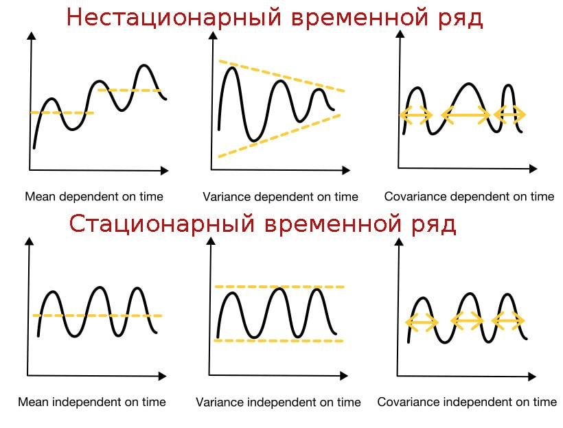
Шесть схематичных панелей: верхний ряд — нестационарные случаи, нижний — стационарные, по одному столбцу на каждое из трёх условий. Слева уровень (жёлтый пунктир) сверху смещается вверх, снизу держится постоянным. В центре сверху размах колебаний сужается (жёлтый коридор сходится), снизу остаётся одинаковым. Справа сверху жёлтые стрелки между соседними экстремумами разной длины, снизу — одинаковой. Ключевая мысль: стационарность требует всех трёх условий сразу, нарушение любого одного уже делает ряд нестационарным. Источник Многие классические модели временных рядов, например ARMA, предполагают стационарность. Если ряд имеет тренд, меняющуюся дисперсию или сезонные сдвиги, модель может принять нестационарную структуру за устойчивую закономерность и плохо прогнозировать.
- Средний уровень продаж растёт каждый месяц - меняется математическое ожидание.
- Амплитуда колебаний спроса увеличивается вместе с ростом бизнеса - меняется дисперсия.
- В ряду есть ежегодная сезонность - ковариационная структура зависит от календаря.
Ряд с трендом и сезонностью: скользящее среднее (розовая линия) уползает вверх, полоса $\pm$ скользящего стандартного отклонения тоже смещается — ряд нестационарен. Первая разность $\Delta y_t$ убирает тренд, но сезонные колебания остаются; сезонная разность $\Delta_{12}\Delta y_t$ убирает и их — среднее и разброс перестают зависеть от времени. На практике смотрят график ряда, rolling mean, rolling variance, ACF/PACF и статистические тесты вроде ADF или KPSS. Тесты полезны, но их нельзя использовать без визуального анализа и понимания домена.
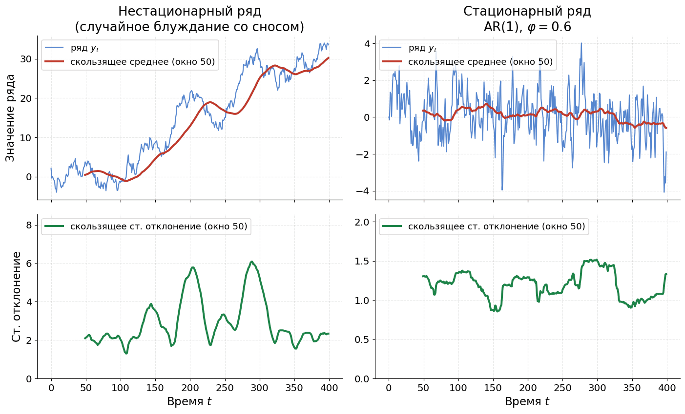
Так выглядит та же диагностика на реальных данных вместо схемы. Слева нестационарный ряд (случайное блуждание со сносом), справа стационарный AR(1) с $\varphi = 0.6$. Верхние панели: сам ряд синим и скользящее среднее по окну 50 красным — слева красная линия уверенно уходит с 0 до 30, справа всё время держится около нуля в пределах примерно $\pm 0.7$. Нижние панели: скользящее стандартное отклонение зелёным — слева оно скачет от 1.3 до 6.1, справа сидит в узком коридоре 0.85–1.5. Вертикальные шкалы у левой и правой колонок разные: слева ряд гуляет от $-5$ до 35, справа — от $-4$ до 4. Links
Что означает стационарность временного ряда?
Статистические свойства ряда не меняются со временем: среднее, дисперсия и зависимость от лагов стабильны.
Почему тренд нарушает стационарность?
Потому что среднее значение ряда меняется со временем.
Почему стационарность важна для ARMA-подобных моделей?
Эти модели описывают устойчивую зависимость от прошлых значений и ошибок. При нестационарности параметры могут стать нестабильными.
Как на практике диагностируют нестационарность?
Смотрят график, rolling statistics, ACF/PACF и используют тесты ADF/KPSS как дополнительную проверку.
-
Гомоскедастичность означает, что дисперсия ошибок или самого ряда примерно постоянна во времени.
Гетероскедастичность означает, что дисперсия меняется: например, при большем уровне продаж разброс продаж тоже становится больше.
Если разброс растёт вместе с уровнем ряда, модель начинает хуже различать структуру и шум. В таких случаях полезно применить преобразование, которое сжимает большие значения сильнее малых.
Частые варианты:
Преобразование Формула Когда использовать Логарифм $z_t = \log y_t$ положительные значения, мультипликативная сезонность Корень $z_t = \sqrt{y_t}$ счётчики, умеренная гетероскедастичность Box-Cox $z_t = \frac{y_t^\lambda - 1}{\lambda}$ положительные значения, подбор степени Для $\lambda = 0$ преобразование Box-Cox переходит в логарифм: $z_t = \log y_t$.
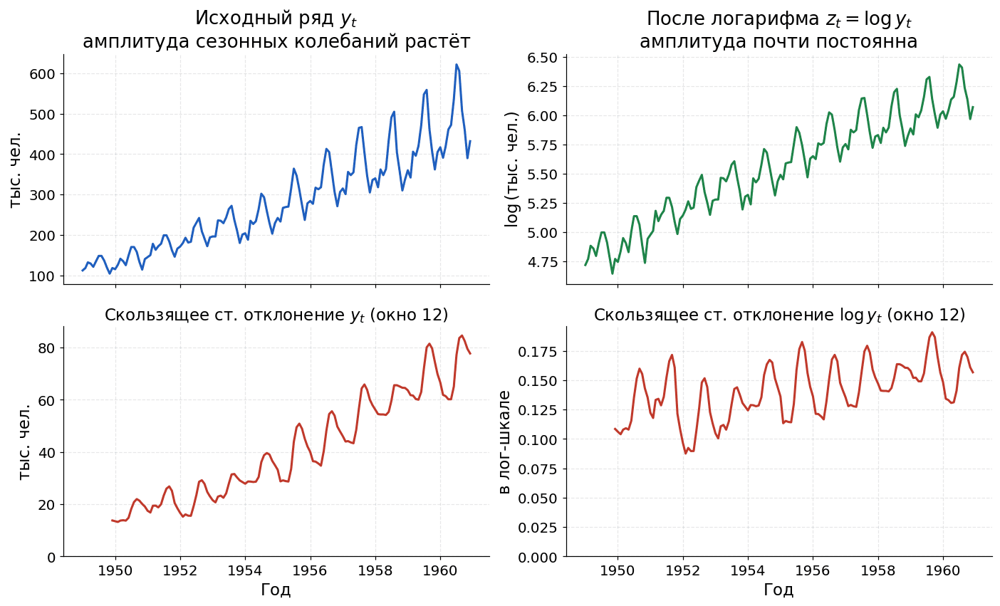
Верхние панели: слева синим исходный ряд авиапассажиров, справа зелёным его логарифм. Нижние панели важнее: красным показано скользящее стандартное отклонение по окну 12 для каждого из них. В исходной шкале оно растёт примерно с 14 до 85 тысяч человек, то есть в шесть раз за десять лет — типичная гетероскедастичность. После логарифма то же стандартное отклонение колеблется в узкой полосе 0.09–0.19 и такого роста уже не показывает. Ровно этого и добиваются логарифмом или Box-Cox: разброс перестаёт зависеть от уровня ряда. Если модель обучалась на преобразованном ряде $z_t$, прогноз нужно вернуть в исходную шкалу. Для логарифма это $\hat{y}_t = \exp(\hat{z}_t)$. При этом для вероятностных прогнозов и доверительных интервалов обратное преобразование требует аккуратности: среднее в лог-шкале не обязано просто превращаться в среднее в исходной шкале.
Links
Что такое гетероскедастичность?
Ситуация, когда дисперсия ряда или ошибок меняется со временем или зависит от уровня ряда.
Зачем применять логарифм к временному ряду?
Логарифм сжимает большие значения, часто стабилизирует дисперсию и переводит мультипликативные эффекты в аддитивные.
Что делает преобразование Box-Cox?
Подбирает степенное преобразование положительного ряда, чтобы сделать дисперсию более стабильной и распределение ближе к удобному для модели.
Почему важно помнить об обратном преобразовании?
Модель прогнозирует в преобразованной шкале, а бизнесу или метрике часто нужен прогноз в исходных единицах.
-
Дифференцирование ряда заменяет значения на разности соседних наблюдений:
$$ \Delta y_t = y_t - y_{t-1}. $$
Это помогает убрать линейный тренд и приблизить ряд к стационарному.
Если есть сезонность с периодом $s$, используют сезонную разность:
$$ \Delta_s y_t = y_t - y_{t-s}. $$
Например, для недельной сезонности в дневных данных часто берут $s=7$.
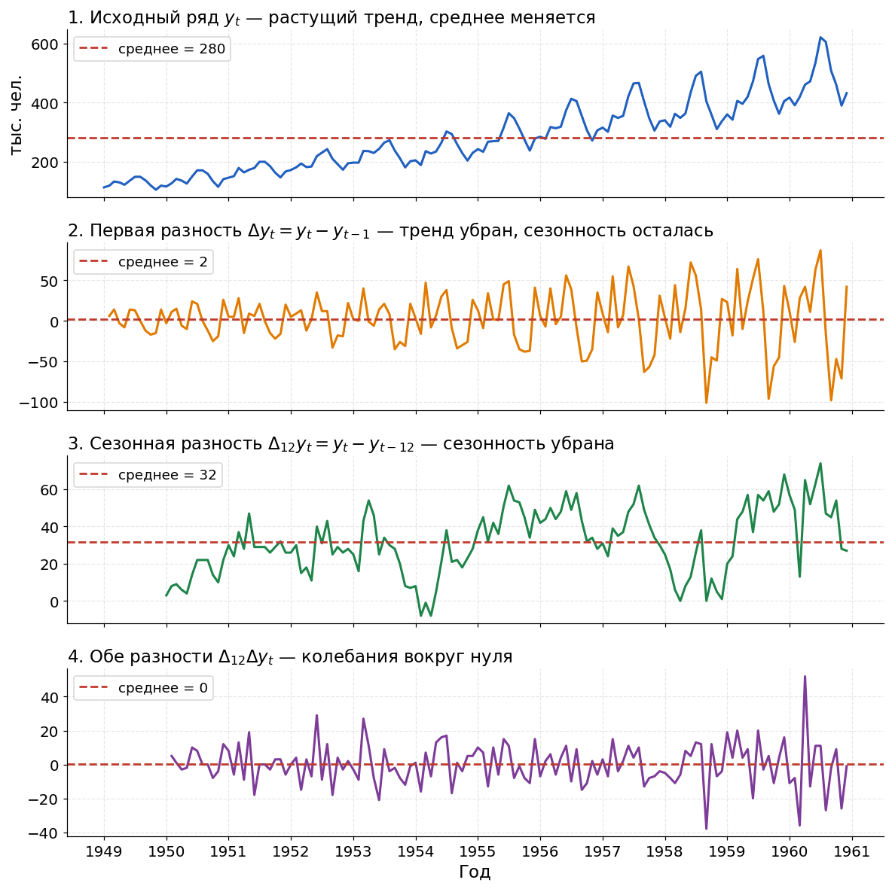
Четыре шага на одном ряде авиапассажиров, красный пунктир на каждой панели — среднее. (1) Исходный ряд синим: среднее 280 не описывает ни начало, ни конец — это и есть тренд. (2) Первая разность $\Delta y_t$ оранжевым: тренд ушёл, среднее упало до 2, но регулярные годовые всплески на месте. (3) Сезонная разность $\Delta_{12} y_t$ зелёным: сезонность ушла, зато осталась медленно ползущая вверх кривая со средним 32 — это остаток тренда. (4) Обе разности сразу $\Delta_{12}\Delta y_t$ фиолетовым: колебания вокруг нуля без тренда и без сезонности. Панели 2 и 3 показывают главное: одна разность убирает что-то одно, и часто нужны обе. Если продажи растут примерно на 10 единиц каждый день, исходный ряд нестационарен по среднему. После перехода к разностям $\Delta y_t$ получится ряд около 10 с шумом вокруг этого уровня.
Тот же процесс в динамике: исходный ряд с трендом и сезонностью → $\Delta y_t$ (тренд ушёл, сезонность на месте) → $\Delta_{12}\Delta y_t$ (ушли обе). Розовая линия — скользящее среднее, полоса — скользящее стандартное отклонение: после обеих разностей они перестают плыть. Слишком много разностей может удалить полезный сигнал и усилить шум. Поэтому порядок дифференцирования $d$ в ARIMA обычно берут небольшим: часто $0$, $1$ или редко $2$.
Links
Что такое первая разность ряда?
$\Delta y_t = y_t - y_{t-1}$, то есть изменение значения относительно предыдущего момента.
Зачем дифференцировать временной ряд?
Чтобы убрать тренд или сезонный компонент и сделать ряд ближе к стационарному.
Что такое сезонное дифференцирование?
Разность с лагом сезона: $\Delta_s y_t = y_t - y_{t-s}$.
Чем опасно передифференцирование?
Оно может удалить полезную структуру ряда и превратить задачу в моделирование шума.
-
ACF (autocorrelation function) показывает корреляцию ряда с самим собой на разных лагах:
$$ \rho(k) = \mathrm{Corr}(y_t, y_{t-k}). $$
Если $\rho(7)$ высокая для дневных данных, это может говорить о недельной сезонности.
PACF (partial autocorrelation function) показывает прямую связь между $y_t$ и $y_{t-k}$ после учёта промежуточных лагов $1,\ldots,k-1$.
ACF отвечает на вопрос "насколько ряд похож на себя через $k$ шагов", а PACF - "есть ли у лага $k$ самостоятельный вклад после более близких лагов".
Верх — ряд AR(1) с $\varphi=0.7$; розовая копия сдвигается на лаг $k$, корреляция между ними становится столбиком ACF. Серая полоса — зона незначимости $\pm 1.96/\sqrt{n}$. Для AR(1) ACF затухает геометрически, а PACF обрывается после лага 1; для MA(1) — наоборот: ACF обрывается, PACF затухает. Грубое правило для стационарных рядов:
- у AR($p$) PACF часто резко обрывается после лага $p$, а ACF убывает постепенно;
- у MA($q$) ACF часто резко обрывается после лага $q$, а PACF убывает постепенно;
- у ARMA обе функции обычно убывают без резкого простого обрыва.
Это не строгий закон для всех данных, а диагностическая подсказка.
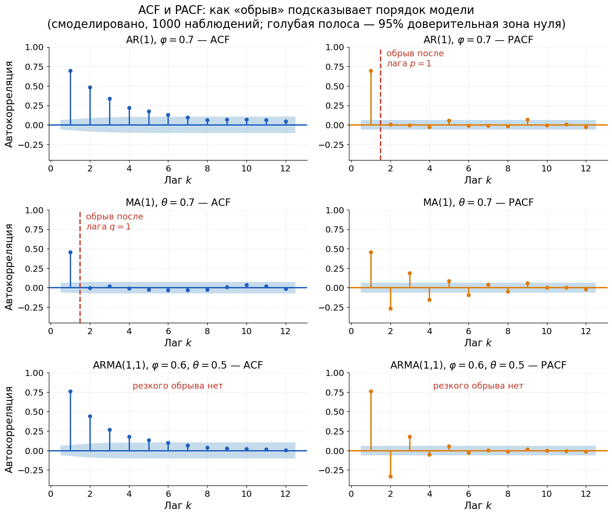
Три строки — три модели, в каждой слева ACF синим, справа PACF оранжевым; по 1000 сгенерированных наблюдений, голубая полоса — 95% зона незначимости. Верхняя строка, AR(1) с $\varphi = 0.7$: ACF затухает геометрически (примерно 0.70, 0.49, 0.34, 0.22, ...), а PACF обрывается сразу после лага 1 — красный пунктир отмечает место обрыва, дальше все столбики лежат внутри полосы. Средняя строка, MA(1) с $\theta = 0.7$: всё зеркально — обрывается ACF после лага 1, а PACF затухает с чередованием знака ($0.46$, $-0.27$, $0.19$, $-0.15$). Нижняя строка, ARMA(1,1): чистого обрыва на конкретном лаге нет ни у одной из функций, поэтому порядок по картинке уже не прочитать — нужны AIC/BIC и backtesting. ACF/PACF нужно строить после разумной предобработки: удаления тренда, стабилизации дисперсии и сезонного дифференцирования, если они нужны. На явно нестационарном ряде графики могут вводить в заблуждение.
Links
Что показывает ACF?
Корреляцию ряда с самим собой на лаге $k$: насколько $y_t$ связан с $y_{t-k}$.
Что показывает PACF?
Частную автокорреляцию: прямую связь с лагом $k$ после учёта промежуточных лагов.
Как ACF/PACF помогают выбирать ARIMA-параметры?
Они дают подсказки для порядков AR и MA: $p$ связан с PACF, $q$ связан с ACF.
Почему ACF/PACF опасно смотреть на нестационарном ряде?
Тренд и меняющаяся дисперсия создают сильные ложные корреляции, которые не являются стабильной зависимостью.
-
Exponential Smoothing строит сглаженный уровень ряда, где новые наблюдения получают больший вес, а старые - экспоненциально меньший:
$$ \ell_t = \alpha y_t + (1-\alpha)\ell_{t-1}, $$
где $\alpha \in [0,1]$ - параметр сглаживания.
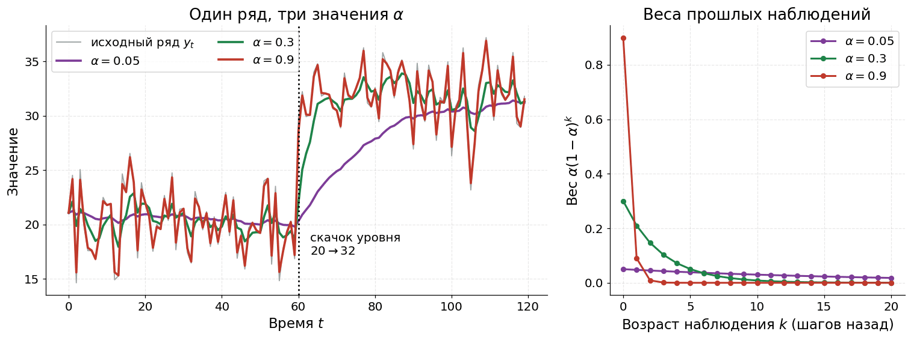
Слева один и тот же серый ряд сглажен тремя значениями $\alpha$; в момент $t = 60$ уровень скачком меняется с 20 на 32. Красная линия $\alpha = 0.9$ догоняет новый уровень почти мгновенно, но повторяет каждый шумовой зубец. Фиолетовая $\alpha = 0.05$ почти не шумит, зато выходит на новый уровень только к $t \approx 110$, то есть с опозданием примерно в полсотни шагов. Зелёная $\alpha = 0.3$ — компромисс. Справа те же три значения в виде весов $\alpha(1-\alpha)^k$: при $\alpha = 0.9$ последнему наблюдению достаётся вес 0.9 и почти ничего не остаётся остальным, при $\alpha = 0.05$ вес размазан по десяткам прошлых точек. Если $\alpha$ близко к 1, модель быстро реагирует на новые значения, но сильнее ловит шум. Если $\alpha$ близко к 0, прогноз более гладкий, но медленно адаптируется к изменениям.
Серый ряд со скачком уровня в $t=60$, розовая линия — $s_t=\alpha y_t+(1-\alpha)s_{t-1}$. При $\alpha=0.1$ линия гладкая, но догоняет новый уровень с большим опозданием; при $\alpha=0.9$ реагирует сразу, но повторяет каждый шумовой зубец. Справа — веса $\alpha(1-\alpha)^k$ прошлых наблюдений. В конце: простое сглаживание прогнозирует константу, метод Хольта добавляет тренд. Метод Что учитывает Когда полезен Simple Exponential Smoothing только уровень нет тренда и сезонности Holt уровень и тренд есть тренд Holt-Winters уровень, тренд и сезонность есть сезонность Holt-Winters бывает аддитивным и мультипликативным, как и разложение ряда на компоненты.
Экспоненциальное сглаживание часто является сильным baseline для бизнес-рядов: спроса, продаж, трафика, метрик мониторинга. Оно простое, быстрое и хорошо интерпретируется.
Экспоненциально сглаживание также активно используется в глубоком обучении — например, при сглаживании истории градиентов (например, в оптимизаторе Adam), а также при усреднении статистик (среднего, дисперсии) в BatchNorm-слое при инференсе. Подробнее см. в Вопросе о BatchNorm и Вопросе о EMA
Links
Что делает экспоненциальное сглаживание?
Строит сглаженный уровень ряда, давая больший вес новым наблюдениям и меньший вес старым.
За что отвечает параметр $\alpha$?
За скорость реакции на новые данные: большое $\alpha$ быстрее адаптируется, малое $\alpha$ сильнее сглаживает.
Чем Holt отличается от простого сглаживания?
Holt дополнительно моделирует тренд.
Когда нужен Holt-Winters?
Когда в ряде есть сезонность, которую нужно явно учитывать.
-
AR($p$), autoregressive model, предсказывает текущее значение через прошлые значения ряда:
$$ y_t = c + \varphi_1 y_{t-1} + \ldots + \varphi_p y_{t-p} + \varepsilon_t. $$
Идея: если прошлые значения хорошо объясняют текущее, их можно использовать как признаки.
MA($q$), moving average model, описывает текущее значение через прошлые ошибки:
$$ y_t = c + \varepsilon_t + \theta_1 \varepsilon_{t-1} + \ldots + \theta_q \varepsilon_{t-q}. $$
Здесь моделируется не сам прошлый ряд, а инерция случайных шоков.
ARMA($p,q$) объединяет AR и MA:
$$ y_t = c + \sum_{i=1}^{p}\varphi_i y_{t-i} + \varepsilon_t + \sum_{j=1}^{q}\theta_j \varepsilon_{t-j}. $$
ARMA применяют к стационарным рядам. Если ряд нестационарен, обычно переходят к ARIMA.
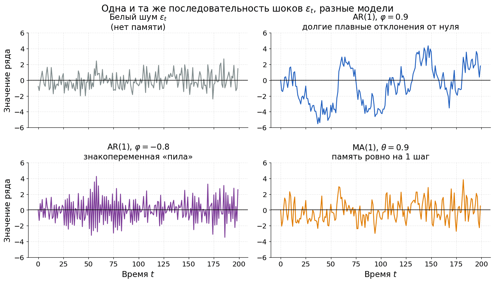
Все четыре панели построены на одной и той же последовательности шоков $\varepsilon_t$ — различается только модель, вертикальная шкала везде одинаковая, от $-6$ до 6. Серым белый шум: соседние точки независимы. Синим AR(1) с $\varphi = 0.9$: тот же шум, но ряд надолго уходит от нуля и гуляет примерно от $-5.5$ до 4.5 — шок затухает медленно, память длинная. Фиолетовым AR(1) с $\varphi = -0.8$: отрицательный коэффициент даёт знакопеременную пилу, значения перепрыгивают через ноль почти на каждом шаге. Оранжевым MA(1) с $\theta = 0.9$: шок влияет ровно на один следующий шаг, поэтому ряд чуть глаже белого шума, но долгих отклонений, как у AR, в нём нет. ACF и PACF помогают подобрать порядок $p$ и $q$, но окончательный выбор обычно проверяют по качеству на backtesting, информационным критериям AIC/BIC и анализу остатков.
Одна и та же история (синие точки), три модели прогнозируют по шагам (розовые точки). AR(2): синие стрелки показывают, что новое значение собирается из $y_{t-1}$ и $y_{t-2}$. MA(1): оранжевый отрезок — прошлая ошибка $\varepsilon_{t-1}$, именно она даёт вклад. ARMA складывает оба механизма; ARIMA — это ARMA после дифференцирования. Links
Что означает AR($p$)?
Авторегрессионная модель, где $y_t$ зависит от $p$ предыдущих значений ряда.
Что означает MA($q$)?
Модель скользящего среднего, где $y_t$ зависит от текущей и $q$ прошлых ошибок.
Что объединяет ARMA($p,q$)?
Авторегрессионную часть по прошлым значениям и MA-часть по прошлым ошибкам.
Почему ARMA обычно требует стационарности?
Она предполагает устойчивую зависимость от лагов и ошибок; при тренде или меняющейся дисперсии эта зависимость нестабильна.
-
ARIMA($p,d,q$) - это ARMA после дифференцирования ряда $d$ раз:
- $p$ - порядок AR-части;
- $d$ - порядок дифференцирования;
- $q$ - порядок MA-части.
Если $d=0$, ARIMA превращается в ARMA.
Компоненты, из которых состоит ARIMA: AR берёт прошлые значения (синие стрелки от $y_{t-1}$, $y_{t-2}$), MA — прошлые ошибки (оранжевый отрезок $\varepsilon_{t-1}$), ARMA — и то и другое. Буква I добавляет дифференцирование перед всем этим. SARIMA добавляет сезонные порядки:
$$ SARIMA(p,d,q)(P,D,Q)_s, $$
где $s$ - длина сезона, а $P,D,Q$ - сезонные аналоги AR, differencing и MA.
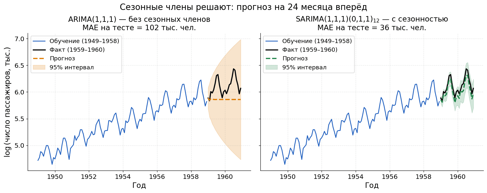
Обе модели обучены на логарифме ряда авиапассажиров за 1949–1958 (синяя линия) и прогнозируют 24 месяца 1959–1960; чёрным показан факт. Слева ARIMA(1,1,1) без сезонных членов: прогноз выродился в почти горизонтальную линию около 5.86, доверительный интервал раздувается веером, а MAE после возврата в исходную шкалу — 102 тысячи человек. Справа SARIMA(1,1,1)(0,1,1) с периодом 12: прогноз воспроизводит и годовые пики, и рост уровня, интервал заметно уже, MAE — 36 тысяч. Это и есть цена игнорирования сезонности: ошибка почти втрое больше при том же объёме данных. SARIMAX добавляет внешние признаки $X_t$: праздники, промоакции, цену, температуру, календарные факторы, маркетинговые расходы.
Идея: прогноз зависит не только от прошлого ряда, но и от известных или прогнозируемых внешних переменных.
Модель Когда подходит ARIMA есть тренд, но нет выраженной сезонности SARIMA есть регулярная сезонность SARIMAX есть сезонность и внешние признаки В реальных задачах эти модели часто используют как сильный интерпретируемый baseline.
Links
Что означают параметры ARIMA($p,d,q$)?
$p$ - число AR-лагов, $d$ - порядок дифференцирования, $q$ - число MA-лагов.
Чем ARIMA отличается от ARMA?
ARIMA включает дифференцирование для работы с нестационарными рядами, ARMA применяется к стационарному ряду.
Когда нужна SARIMA?
Когда в данных есть регулярная сезонность с периодом $s$.
Что добавляет SARIMAX?
Внешние признаки $X_t$, которые помогают объяснить ряд помимо его собственной истории.
-
Prophet - библиотека для прогнозирования временных рядов с явной декомпозицией:
$$ y(t) = g(t) + s(t) + h(t) + \varepsilon_t, $$
где $g(t)$ - тренд, $s(t)$ - сезонность, $h(t)$ - эффекты праздников и событий.
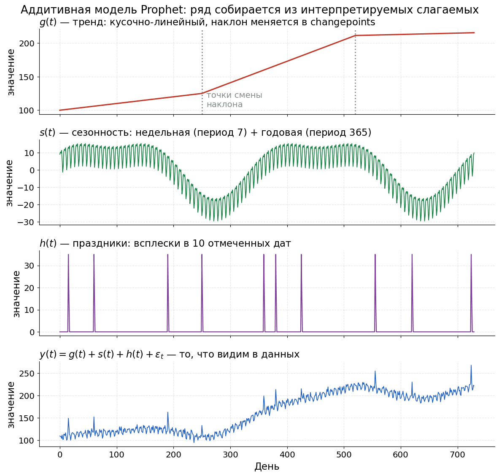
Prophet собирает ряд из слагаемых, каждое из которых можно посмотреть отдельно — в этом и состоит его интерпретируемость. Красным $g(t)$: кусочно-линейный тренд, наклон меняется в двух changepoints (серый пунктир на днях 250 и 520), а на последнем участке рост почти останавливается. Зелёным $s(t)$: сумма недельной сезонности с периодом 7 и годовой с периодом 365 — частая мелкая рябь наложена на медленную годовую волну. Фиолетовым $h(t)$: эффекты праздников, десять всплесков высотой 35 в заданные даты (с меньшим следом на следующий день). Внизу синим итог $y(t) = g(t) + s(t) + h(t) + \varepsilon_t$ — то, что видно в сырых данных; попробуй на глаз найти в нём годовую волну и праздничные пики, чтобы почувствовать, зачем нужна декомпозиция. Prophet часто полезен для бизнес-рядов с календарной сезонностью, праздниками, пропусками и выбросами. Его сильная сторона - быстрый интерпретируемый baseline, а не универсальное превосходство над статистическими или ML-моделями.
LSTM - рекуррентная нейросетевая архитектура, которая обрабатывает последовательность по шагам и хранит скрытое состояние. Для временных рядов LSTM может принимать окно прошлых значений и признаков:
$$ (y_{t-w}, \ldots, y_{t-1}, X_{t-w}, \ldots, X_{t-1}) \to \hat{y}_t. $$
LSTM требует больше данных, аккуратной валидации, нормализации, выбора окна, регуляризации и контроля утечек. На коротких рядах ARIMA, экспоненциальное сглаживание, Prophet или градиентный бустинг по лаговым признакам часто оказываются сильнее и стабильнее.
Если ряд один, короткий и нужен интерпретируемый прогноз, начни с naive baseline, экспоненциального сглаживания, ARIMA/SARIMA/SARIMAX или Prophet. Если рядов много, есть богатые признаки и сложные нелинейные зависимости, тогда нейросетевые модели могут быть оправданы.
Links
Как Prophet представляет временной ряд?
Как сумму тренда, сезонностей, эффектов праздников и ошибки: $y(t)=g(t)+s(t)+h(t)+\varepsilon_t$.
Когда Prophet особенно удобен?
Для бизнес-рядов с календарной сезонностью, праздниками, пропусками и необходимостью быстро получить интерпретируемый baseline.
Что делает LSTM в задаче временных рядов?
Обрабатывает последовательность прошлых значений и признаков через скрытое состояние, чтобы предсказать будущие значения.
Почему LSTM не стоит брать первым baseline?
Она сложнее, требует больше данных и настройки; простые модели часто дают более устойчивый результат на коротких рядах.